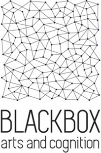

CMIC is a lab funded by the TEC in New Zealand, with a focus on Industry collaboration and commercialization. There, I worked mainly in sesveral small projects with japanese partners Square ENIX and IMAGICA on several projects related to their production pipeline. I also collaborated with the XR researchers in the lab in teleconferencing.
 Blackbox was an interdisciplinary ERC-funded project hosted by FCSH-UNL from September 2014 to 2019. On this project, I was mostly interested in the capture and representation of information of the human performers, which goes through point-cloud data capture and rendering, and building technology that will help people from different areas draw conclusions about the deeper meaning of what is there represented.
REngine was a short-term collaboration with the IT-medex to develop a Unity3D solution for volume rendering (3D Textures) and surface rendering (meshes). The goal was visualizing volume data reconstructed from medical images (CT, MRI, etc), and render using a raymarching shader.
Machinima Storyteller was a project funded by beActive with the goal of creating a Machinima from an input movie script, in an interactive environment where a game-like experience could be later developed. It was developed using Unity3D, with intelligent agents doing the interpretation of the parts.
 Target was a serious game project focused on conflict resolution in business scenarios.
I developed part of the the AI component of the platform.
Target was a serious game project focused on conflict resolution in business scenarios.
I developed part of the the AI component of the platform.
Teaching
Computer Graphics - Universidade de Lisboa - Técnico Lisboa
2016,
2017 and
2018
Teaching two different group of students, supervising an OPENGL 2.0 / C++ project, or Javascript 3D (three.js)
Foundations of Modelling and Rendering - University of Leeds
2020
Mathematics, Physics, Computing that are the basis of computer Graphics. Diving deeper than what is done at the undergraduate level, students are introduced to modern pipelines, raytracing,
and many other fundamental concepts. This module is part of the High-Performance Graphics and Games Engineering MSc.
Communications
Computer Entretainment Developers Conference, CEDEC2020, Yokohama, Japan. "Mesh Reduction Struggles/メッシュリダクション四苦八苦"
Publications
2023
Saliency detection for large-scale mesh decimation RK dos Anjos, RA Roberts, B Allen, J Jorge, K Anjyo Computers & Graphics [elsevier] [pdf]
2022
Metameric Inpainting for Image Warping RK dos Anjos, DR Walton, K Akşit, S Friston, D Swapp, A Steed, T Ritschel IEEE Transactions on Visualization and Computer Graphics [ieee] [pre-print] [project]
Metameric Varifocal Holograms DR Walton, K Kavaklı, RK dos Anjos, D Swapp, T Weyrich, H Urey, A Steed, T Ritschel, K Akşit 2022 IEEE Conference on Virtual Reality and 3D User Interfaces (VR) [ieee] [pre-print]
Capturing and visualizing 3D dance data: Challenges and lessons learnt C. Ribeiro, RK dos Anjos, C. Fernandes Dance data, cognition, and multimodal communication, pp 148-160 [book] [pre-print]
2021
Spectator View: Enabling Asymmetric Interaction between HMD Wearers and Spectators with a Large Display F Welsford-Ackroyd, A Chalmers, RK dos Anjos, D Medeiros, H Kim, T Rhee Proceedings of the ACM on Human-Computer Interaction, ISS 2021 [acm] [pre-print]
Beyond Blur: Ventral Metamers for Foveated Rendering RK dos Anjos and D Walton, S Friston, D Swapp, K Akşit, A Steed, T Ritschel ACM Trans. Graph. (Proc. SIGGRAPH 2021) [acm] [pre-print] [project page]
Promoting Reality Awareness in Virtual Reality through Proxemics D Medeiros, RK dos Anjos, N Pantidi, K Huang, M Sousa, C Anslow, J Jorge 2021 IEEE Virtual Reality and 3D User Interfaces (VR) [ieee] [pdf]
Deformation Transfer Survey R Roberts, RK dos Anjos, A Maejima, K Anjyo Computers & Graphics [elsevier] [pdf]
2020
Voice Interaction for Augmented Reality Navigation Interfaces with Natural Language Understanding J Zhao, CJ Parry, RK dos Anjos, C Anslow, T Rhee International Conference on Image and Vision Computing New Zealand [ieee] [pdf]
Experiencing Choreographed 4D Visuals in a VR Dance Installation S Jürgens,C Fernandes, RK dos Anjos Performance Research,A Journal of the Performing Art, Volume 25, 2020 - Issue 4: On Hybridity [Taylor Francis] [pdf]
Augmented Virtual Teleportation for High-Fidelity Telecollaboration T Rhee, S Thompson, D Medeiros, RK dos Anjos, A Chalmers IEEE Transactions on Visualization and Computer Graphics [ieee] [pdf]
2019
Piku Piku Interpolation R Roberts, RK dos Anjos, K Anjyo, JP Lewis SIGGRAPH Asia 2019 Technical Briefs [acm] [pdf]
LINACVR: VR Simulation for Radiation Therapy Education H Bannister, B Selwyn-Smith, A L.Wilson, D Medeiros, RK dos Anjos,C Anslow, B Robinson,Aidan Leong, Paul Kane The 17th International Conference on Virtual-Reality Continuum and its Applications in Industry (VRCAI '19) [acm] [pdf]
Dynamic Occlusion Handling for Real-Time AR Applications J Jorge, R Silva, RK dos Anjos The 17th International Conference on Virtual-Reality Continuum and its Applications in Industry (VRCAI '19) [acm] [pdf]
Adventures in Hologram Space: Exploring the Design Space of Eye-to-eye Volumetric Projection-based Telepresence RK dos Anjos, M Sousa, D Mendes, D Medeiros, M Billinghurst, Craig Anslow, J Jorge 25th ACM Symposium on Virtual Reality Software and Technology (VRST '19) [acm] [pdf] [video]
Anatomy Studio: a Tool for Virtual Dissection Through Augmented 3D Reconstruction E Zorzal, M Sousa, D Mendes, RK dos Anjos, D Medeiros, S Paulo, P Rodrigues, J Mendes, V Delmas, JF Uhl, J Mogorrón, J Jorge, DS Lopes Computers & Graphics [elsevier] [pdf]
WARPING DEIXIS: Distorting Gestures to Enhance Collaboration M Sousa, RK dos Anjos, D Mendes, M Billinghurst and J Jorge ACM Conference on Human Factors in Computing Systems (CHI), 2019 [acm] [pdf] [video] [presentation]
2018
A navigation paradigm driven classification for video-based rendering techniques RK dos Anjos, J Pereira and J Gaspar Computers & Graphics 77, Pages 205-216 [elsevier] [pdf]
Keep my head on my shoulders! Why third-person is bad for navigation in VR D Medeiros, RK dos Anjos, D Mendes, J Pereira, A Raposo, J Jorge VRST'2018 - ACM Symposium on Virtual Reality Software and Technology [acm] [video] [pdf]
Three-Dimensional Visualization of Movement Qualities in Contemporary Dance RK dos Anjos, CS Ribeiro and C Fernandes Proceedings of the 5th International Conference on Movement Computing, 10 [acm] [video] [pdf]
Assessing the usability of tile-based interfaces to visually navigate 3-D parameter domains DS Lopes, RK dos Anjos and J Jorge International Journal of Human-Computer Studies, 118 [elsevier] [video] [pdf]
Virtual Reality Annotator: A Tool to Annotate Dancers in a Virtual Environment CS Ribeiro, RK dos Anjos and C Fernandes Part of the Lecture Notes in Computer Science book series (LNCS, volume 10605) [springer] [pdf]
2017
Creepy Tracker Toolkit for Context-aware Interfaces M Sousa, D Mendes, RK dos Anjos, D Medeiros, A Raposo, A Ferreira, J Pereira and J Jorge ACM Interactive Surfaces and Spaces (ISS), 2017 [acm] [video] [github] [pdf]
Multiview Layered Depth Image RK dos Anjos, JM Pereira, JA Gaspar, C Fernandes Journal of WSCG 25(2), 115 [WSCG DL] [pdf] [bib]
Stroke-based splatting: an efficient multi-resolution point cloud visualization technique RK dos Anjos, CS Ribeiro, DS Lopes, JM Pereira The Visual Computer [springer] [video] [pdf]
Capturing and Documenting Creative Processes in Contemporary Dance CS Ribeiro, RK dos Anjos, C Fernandes Proceedings of the 4th International Conference on Movement Computing, 7 [acm] [pdf]
3D Flashback: An Informative Application for Dance RK dos Anjos, JM Pereira, C Fernandes ERCIM News 108 (108), 45 [ercim] [pdf]
2016
Transposing Formal Annotations of 2D Video Data into a 3D Environment for Gesture Research V Evola, CS Ribeiro, J Skubisz, RK dos Anjos, International Society for Gesture Studies (ISGS) 2016, 45 [isgs] [pdf]
3d annotation in contemporary dance: enhancing the creation-tool video annotator C Ribeiro, RK dos Anjos, C Fernandes, JM Pereira Proceedings of the 3rd International Symposium on Movement and Computing, 41 [acm] [pdf]
2013
Mappets: An Interactive Plugin for Transmedia Machinima on Unity3D RK dos Anjos, E Di Tullio, R Prada International Conference on Entertainment Computing, 69-74 [springer] [pdf]
2012
Collision Detection on Point Clouds Using a 2.5+ D Image-Based Approach RK dos Anjos, JM Pereira, JF Oliveira Journal of WSCG 20 (2), 145 - 153 [UWB DL] [pdf]
Contacts
Woodhouse Lane, Sir William Henry Bragg Building, Room 2.04d, University of Leeds.
Leeds, United Kingdom.
email: r.kuffnerdosanjos at leeds.ac.uk